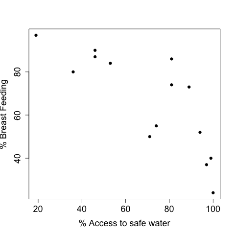

Regression
Introduction
- Regression comes in many forms.
- Here we will learn about linear regression.
- Regression is a set of tools that allow you to model and interpret the relationships between two or more variables.
- In regression we treat on variable as the response and a set of variables as possible predictors of the response.
- Regression models can be used for prediction, for explanation, to test hypotheses about relationships between variables
- the lectures are loosly based on Chance Encounters by Seber and Wild.
- https://www.stat.auckland.ac.nz/~wild/ChanceEnc/index.shtml
Causal Relationships
Let’s look at some data from 1989 on infant death rates per 1000 of population.
[1] 20 4[1] "country" "safe" "breast" "death" - we have 20 measurements on
safe=access to safe waterbreast= percentage of mothers breast feeding at 6 monthsdeath= infant death rate
Correlation vs. Causation
This suggests that longer time breast feeding leads to greater infant mortality.

Countries with access to safe water breast feed for less time.
Causation
- often, as in the example above, there is a third variable (access to clean water) that affects both the response and the predictor
- to get at causation we typically need a randomized controlled experiment
- we cannot always do experiments, eg most epidemiology
Linear Regression
We want to relate the response, \(y\) to the predictor \(x\) using a straight line model
\(y = \beta_0 + \beta_1 \cdot x + \epsilon\)
in this model \(\beta_0\) is the intercept - the value that \(y\) takes when \(x=0\)
\(\beta_1\) is the slope of the line, relating \(x\) to \(y\) and can be interpreted as the average change in \(y\) for a one unit change in \(x\)
\(\epsilon\) represents the inherent variability in the system, it is assumed to be zero on average
some of the statistical theory is easier if you assume that \(\epsilon\)’s come as independent observations with the same distribution (i.i.d), but this is not essential
Plot the data

- the intercept is about -27
- the slope is about 1.5
- interpret these….
Linear Regression
- we can easily fit this model to the data
Call:
lm(formula = infdeath$death ~ infdeath$breast)
Residuals:
Min 1Q Median 3Q Max
-37.568 -21.047 1.368 19.479 33.705
Coefficients:
Estimate Std. Error t value Pr(>|t|)
(Intercept) -26.978 20.148 -1.339 0.205392
infdeath$breast 1.467 0.288 5.093 0.000265 ***
---
Signif. codes: 0 '***' 0.001 '**' 0.01 '*' 0.05 '.' 0.1 ' ' 1
Residual standard error: 23.86 on 12 degrees of freedom
(6 observations deleted due to missingness)
Multiple R-squared: 0.6837, Adjusted R-squared: 0.6573
F-statistic: 25.94 on 1 and 12 DF, p-value: 0.000265Linear Regression
- we denote our estimates by putting a hat on the parameter, e.g. \(\hat{\beta_0}\)
- our estimated line is the given by \(\hat{y} = \hat{\beta}_0 + \hat{\beta}_1 \cdot x\)
- given a new \(x\) we can then predict \(y\)
- but we have to be careful about whether the new \(x\) is sensible
- how do we choose the best straight line?
Least Squares
let our predicted values be \(\hat{y}_i = \hat{\beta}_0 + \hat{\beta}_1 \cdot x_i\)
then one strategy is to minimize the sum of squared prediction errors \[ \sum_{i=1}^n (y_i - \hat{y}_i)^2 \]
this method is called least squares and was described by Gauss in 1822
The estimates are random…
- our model says \[ Y = \beta_0 + \beta_1 \cdot X + \epsilon \]
- where we use \(Y\) and \(X\) to represent the fact that data came from some form of sample from a population we want to make inference about
- usually we will assume \(\epsilon \sim N(0, \sigma^2)\) are independent (but that is not strictly necessary)
Simulation Experiments
one tool that you can use to understand how different methods work is to create a simulation experiment
in these experiments you create a model, where you know the answer, and you control the variability or stochastic component
then you can interpret the way in which the different quantities you are estimating behave
Simulation Experiment
set.seed(123)
##get some x's
x = runif(20, min=20, max=70)
## set our regression
y = 5 + .2 *x
yobs = y + rnorm(20, sd=1.5)
lm2 = lm(yobs~x)
summary(lm2)
Call:
lm(formula = yobs ~ x)
Residuals:
Min 1Q Median 3Q Max
-2.1142 -0.9480 -0.1303 1.0299 2.8389
Coefficients:
Estimate Std. Error t value Pr(>|t|)
(Intercept) 6.71335 1.04242 6.440 4.63e-06 ***
x 0.16055 0.02088 7.691 4.28e-07 ***
---
Signif. codes: 0 '***' 0.001 '**' 0.01 '*' 0.05 '.' 0.1 ' ' 1
Residual standard error: 1.426 on 18 degrees of freedom
Multiple R-squared: 0.7667, Adjusted R-squared: 0.7537
F-statistic: 59.15 on 1 and 18 DF, p-value: 4.275e-07Simulation
- we repeatedly sample from a Normal distribution with
sd=1.5and create a new \(y\) - then we estimate the parameters for that model, and save them
Plots

- \(\hat{\beta}_0\) mean: 4.965; sd: 1.119
- \(\hat{\beta}_1\) mean: 0.201; sd: 0.023
Compare with the Regression summary
Call:
lm(formula = yobs ~ x)
Residuals:
Min 1Q Median 3Q Max
-2.1142 -0.9480 -0.1303 1.0299 2.8389
Coefficients:
Estimate Std. Error t value Pr(>|t|)
(Intercept) 6.71335 1.04242 6.440 4.63e-06 ***
x 0.16055 0.02088 7.691 4.28e-07 ***
---
Signif. codes: 0 '***' 0.001 '**' 0.01 '*' 0.05 '.' 0.1 ' ' 1
Residual standard error: 1.426 on 18 degrees of freedom
Multiple R-squared: 0.7667, Adjusted R-squared: 0.7537
F-statistic: 59.15 on 1 and 18 DF, p-value: 4.275e-07Inference about the model
- typically the intercept is not that interesting
- we test the hypothesis \(H_0: \beta_1 = 0\) to determine whether \(x\) provides any explanation of \(y\)
- \(R^2\) and multiple \(R^2\) tell us about how much of the variation in \(y\) has been captured by the terms in the model
- the residual standard error is an estimate of \(\sigma\) from the distribution of the \(\epsilon_i\)
But….
- all of that inference is dependent on the model being correct
- if the linear model does not fit the data, then the \(\beta\)’s are not meaningful, the variance cannot be estimated, we cannot correctly assess whether or not the covariate(s) x(’s) help to predict \(y\)
Anscombe’s Quartet
And so…
- only the top left plot represents a statistical regression model
- the top right model represents a non-linear relationship, and one that seems to have no error
- the bottom left plot is a straight line, with one possible recording error, but no statistical variation
- the bottom right plot shows no relationship between \(x\) and \(y\) for most points, but there is one outlier, in both \(x\) and \(y\) that affects the estimated relationship
The hard part…
- is not writing the command
lm(y~x)- anyone could do that - it is ensuring that the model adequately represents the data and the relationships within it
- once you have convinced yourself, and others, that this is true then you can interpret, test hypotheses etc
So how might we do that:
the residuals are defined as \[ e_i = y_i - \hat{y}_i \]
we check the residuals for various behaviors
- Constant spread: the \(e_i\)’s have about the same spread regardless of the value of \(x\)
- Independence: Do the \(e_i\)’s show any signs of correlation.
- Symmetry and Unimodality: Do the \(e_i\)’s have an approximately symmetric distribution with a single mode.
- Normality: but that is often too strong a requirement
Residual Plots
- plot the residuals (\(y\)-axis) against:
- any covariates (\(x\)’s)
- the predicted values (\(\hat{y}\)’s)
- look for trends, increasing or decreasing variability (fans)
- outliers - but more on that in a later lecture
- when data are collected over time, we sometimes look for relationships between successive residuals
- when you don’t have much data don’t over interpret
Residual Plots
- we return to our child birth example

Extensions - non-linear models
- fitting straight lines is fine, most of the time
- we know that complex relationships can be approximated by a straight line over a restricted set of values
- we can add polynomials in our covariates \[ y = \beta_0 + \beta_1 \cdot x + \beta_2 \cdot x^2 + \epsilon \]
- these models have very strong assumptions and the effect of the polynomial terms on the fit can be large
Extensions: non-linear models
- a straight line model is appropriate if \(y\) changes by a fixed amount for every unit change in \(x\)
- an exponential curve represents the case where \(y\) changes by a fixed percentage (or proportion) for every unit change in \(x\)
- many economic models are exponential
- the exponential model: \[ y = a \cdot e^{bx} \\ ln(y) = ln(a) + b \cdot x \]
Extensions - non-linear models
- so we see that we can fit an exponential model with linear regression if we transform \(y\)
- there are many other transformations of \(y\) that could be used and an extensive literature on choosing the best ones (Box-Cox transformation)
- a transformation of \(y\) will in general not just effect the mean relationship but it also affects the variability in your \(y\) values as a function of \(x\)
Exponential models with different error assumptions
- the models are not the same
- we would need the error to be multiplicative in M1 for them to be the same \[ M1: y = a \cdot e^{bx} + \epsilon \\ M2: ln(y) = ln(a) + b \cdot x + \epsilon \\ \epsilon \sim N(0, \sigma^2) \]
Plots

Prediction and Prediction intervals
there are two kinds of predictions that are interesting
- confidence interval: predict the mean response for a given value of \(x\);
- prediction interval: predict the value of the response \(y\) for an individual whose covariate is \(x\);
almost all regression methods in R have prediction methods associated with them, you are encouraged to use them
the first of these has less variability than the second
Confidence Interval vs Prediction Interval
- return to our example on infant death
Call:
lm(formula = death ~ breast, data = infdeath)
Residuals:
Min 1Q Median 3Q Max
-37.568 -21.047 1.368 19.479 33.705
Coefficients:
Estimate Std. Error t value Pr(>|t|)
(Intercept) -26.978 20.148 -1.339 0.205392
breast 1.467 0.288 5.093 0.000265 ***
---
Signif. codes: 0 '***' 0.001 '**' 0.01 '*' 0.05 '.' 0.1 ' ' 1
Residual standard error: 23.86 on 12 degrees of freedom
(6 observations deleted due to missingness)
Multiple R-squared: 0.6837, Adjusted R-squared: 0.6573
F-statistic: 25.94 on 1 and 12 DF, p-value: 0.000265CI and PI
- we can predict the mean response for country where 62% of the women breast feed at 6 months
fit lwr upr
1 63.96593 49.8048 78.12705- or we can predict the response for a specific country where 62% of the women breast feed at 6 months
Factors - and their role in regression
a factor is a variable that takes on a discrete set of different values
these values can be unordered, e.g. Male/Female or European, Asian, African, etc.
or they can be ordered, age: less than 18, 18-40, more than 40
we typically implement factors using dummy variables
essentially we create a new set of variables using indicator functions, \(1_{Ai} = 1\) if observation \(i\) has the level \(A\).
Fitting factors in regression models
suppose we have a factor with \(K\) levels
we can fit factors in two ways
- M1: includes an intercept in the model and then use \(K-1\) indicator variables
- M2L=: no intercept and use \(K\) indicator variables.
in M1 we the intercept is the mean value of \(y\), and each \(\beta_j\) is the difference in mean for the \(j^{th}\) retained factor level from the overall mean.
in M2 each of the \(\beta_j\) is the mean value for \(y\) only within factor level \(j\)
Regression with factors
- simple example, suppose our factor is sex, which has two levels, M and F, then
\[ M1: Y = \beta_0 + \beta_M \cdot 1_{M} + \epsilon \\ E[Y | F]= \beta_0 \quad \mbox{and} \quad E[Y|M] = \beta_0 + \beta_M \]
Or \[ M2: y = \beta_M \cdot 1_{M} + \beta_{F} \cdot 1_{F} + \epsilon \\ E[Y|F] = \beta_F \quad \mbox{and} E[Y|M] = \beta_M \]
Small warning
there are some issues you have to worry about when fitting a model without an intercept
in these models the test for each group, \(H_0: \beta_j = 0\) is then comparing the mean for that group to zero (0)
with a model that has an intercept then for each group the test for \(H_0: \beta_j = 0\) tests whether that group mean is different from the mean for the group that was used to determine the intercept.
in the first of these, multiple-\(R^2\) does not have a reasonable interpretation.
Example
Call:
lm(formula = heights ~ sex)
Residuals:
Min 1Q Median 3Q Max
-7.7290 -3.4115 0.5925 3.7202 5.9065
Coefficients:
Estimate Std. Error t value Pr(>|t|)
(Intercept) 68.0986 0.9463 71.966 <2e-16 ***
sexM 0.2882 1.3060 0.221 0.827
---
Signif. codes: 0 '***' 0.001 '**' 0.01 '*' 0.05 '.' 0.1 ' ' 1
Residual standard error: 4.125 on 38 degrees of freedom
Multiple R-squared: 0.00128, Adjusted R-squared: -0.025
F-statistic: 0.04871 on 1 and 38 DF, p-value: 0.8265Example con’t
Call:
lm(formula = heights ~ sex - 1)
Residuals:
Min 1Q Median 3Q Max
-7.7290 -3.4115 0.5925 3.7202 5.9065
Coefficients:
Estimate Std. Error t value Pr(>|t|)
sexF 68.0986 0.9463 71.97 <2e-16 ***
sexM 68.3868 0.9001 75.98 <2e-16 ***
---
Signif. codes: 0 '***' 0.001 '**' 0.01 '*' 0.05 '.' 0.1 ' ' 1
Residual standard error: 4.125 on 38 degrees of freedom
Multiple R-squared: 0.9965, Adjusted R-squared: 0.9964
F-statistic: 5476 on 2 and 38 DF, p-value: < 2.2e-16Other Resources
- there are lots of regression notes and examples around the web
- http://www.stat.ucla.edu/~dinov/courses_students.dir/02/Fall/STAT13.dir/STAT13_notes.html